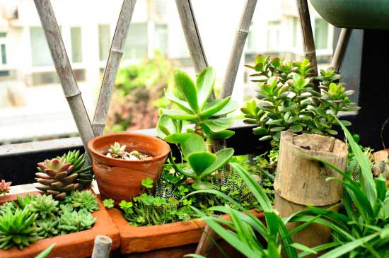

想把多肉植物养的漂亮，其实真的很简单，那就是养护条件，也就是给多肉植物提供的生长环境。
把多肉植物养的漂亮，需要几个条件同时具备，
1.光照时间：每天直射光照5小时以上（光照太强的夏季除外），光照充足时，多肉植物的叶片会改变颜色和包起来，来减少水分消耗，因为它不知道下一次喝饱水是什么时候。
2.通风：通风对多肉植物的养护是非常重要的，可以预防根系积水造成的黑腐和化水，同时也可以预防虫害（那就是该死的介壳虫！）。
3.浇水：给多肉植物浇水，时间最好选在傍晚，水温最好不要过冷（水温和气温的温差不宜过大），每次浇水必须浇透。
4.温差：露养会有昼夜温差，网图多肉植物的果冻色就是靠温差来造就的，可是这个条件不是每一个养多肉的花友都具备。